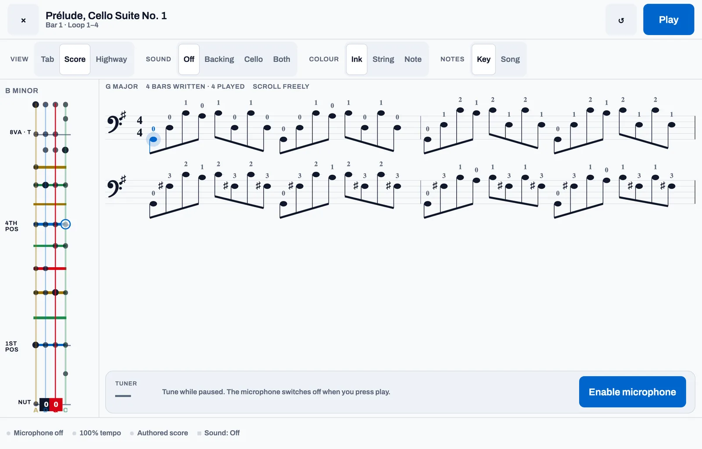
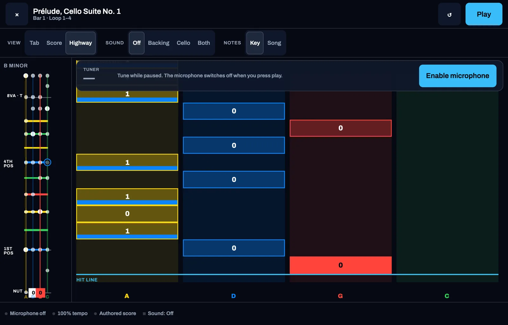

Three ways to read
Tab, score or highway — same music, your choice
Finger numbers on four string lines, engraved bass-clef notation with fingerings, or a Rocksmith-style highway falling or sliding towards the hit line. The fingerboard panel beside it lights the note you are playing, and can show the whole key to improvise in.

